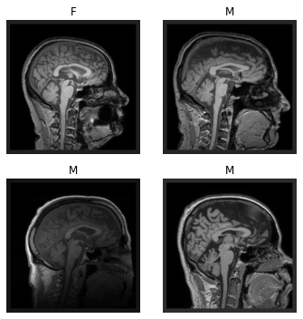
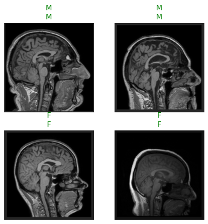
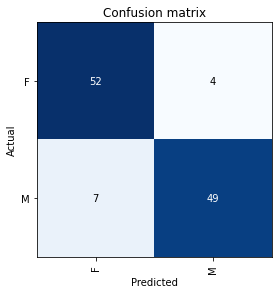
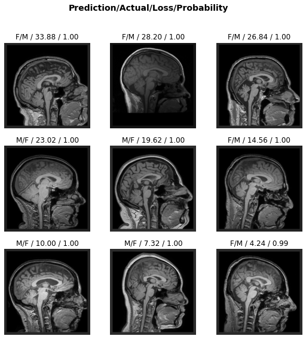
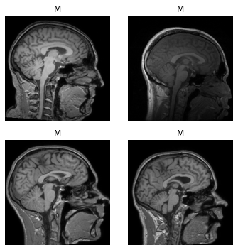
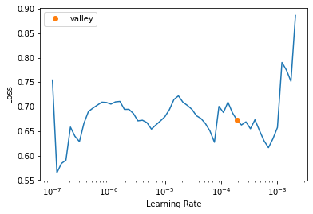
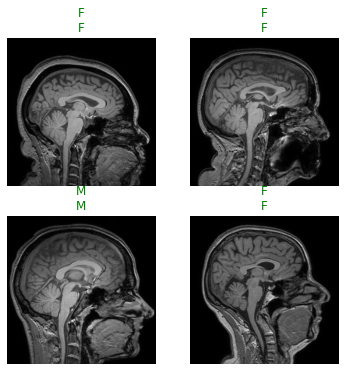

from fastMONAI.vision_all import *Single-label classification
This tutorial highlights how to quickly build a Learner and train a model on a binary classification task.

Beginner
The following line imports all of the functions and classes from the fastMONAI library:
Download external data
For this task, we will download the T1-weighted brain images of healthy subjects (n=556) from the IXI dataset (https://brain-development.org/ixi-dataset/) with the corresponding metadata. We will download the data with the following line of code. Note that the data set is ~ 4.5G, and the download may take some time.
path = Path('../data')
path.mkdir(exist_ok=True)STUDY_DIR = download_ixi_data(path=path)Images already downloaded and extracted to ../data/IXI/T1_images
2022-09-05 14:54:56,757 - INFO - Expected md5 is None, skip md5 check for file ../data/IXI/IXI.xls.
2022-09-05 14:54:56,758 - INFO - File exists: ../data/IXI/IXI.xls, skipped downloading.
Preprocessing ../data/IXI/IXI.xlsLooking at data
Let’s look at how the processed DataFrame is formatted:
df = pd.read_csv(STUDY_DIR/'dataset.csv')df.head()| t1_path | subject_id | gender | age_at_scan | |
|---|---|---|---|---|
| 0 | ../data/IXI/T1_images/IXI002-Guys-0828-T1.nii.gz | IXI002 | F | 35.80 |
| 1 | ../data/IXI/T1_images/IXI012-HH-1211-T1.nii.gz | IXI012 | M | 38.78 |
| 2 | ../data/IXI/T1_images/IXI013-HH-1212-T1.nii.gz | IXI013 | M | 46.71 |
| 3 | ../data/IXI/T1_images/IXI014-HH-1236-T1.nii.gz | IXI014 | F | 34.24 |
| 4 | ../data/IXI/T1_images/IXI015-HH-1258-T1.nii.gz | IXI015 | M | 24.28 |
efore feeding the data into a model, we must create a DataLoaders object for our dataset. There are several ways to get the data in DataLoaders. In the following line, we call the ImageDataLoaders.from_df factory method, which is the most basic way of building a DataLoaders.
Here, we pass the processed DataFrame, define the columns for the images fn_col and the labels label_col, voxel spacing resample, some transforms item_tfms, and the batch size bs.
dls = MedImageDataLoaders.from_df(df, fn_col='t1_path', label_col='gender',
resample=1, item_tfms=[ZNormalization(), PadOrCrop(size=256)], bs=4)We can now take a look at a batch of images in the training set using show_batch:
dls.show_batch(figsize=(5,5),anatomical_plane=2)
Create and train a 3D model
Next, we import a classification network from MONAI, and define the input image size, number of classes to predict, channels, etc.
from monai.networks.nets import Classifier
model = Classifier(in_shape=[1, 256, 256, 256], classes=2,
channels=(8, 16, 32, 64, 128), strides=(2, 2, 2, 2))Then we can create a Learner, which is a fastai object that combines the data and our defined model for training:
learn = Learner(dls, model, metrics=accuracy)learn.fit_one_cycle(2)| epoch | train_loss | valid_loss | accuracy | time |
|---|---|---|---|---|
| 0 | 8.190948 | 3.175142 | 0.857143 | 01:26 |
| 1 | 2.547504 | 1.543512 | 0.901786 | 01:25 |
With the model trained, let’s look at some predictions on the validation data.
Note: Small random variations are involved in training CNN models; hence, you will probably not see exactly the same results shown here.
learn.show_results(anatomical_plane=2)
Showing samples with target value their corresponding predictions (target|predicition). todo
learn.save('model-1')Path('models/model-1.pth')Inference
We can have a look at where our trained model becomes confused while making predictions on the validation data:
learn.load('model-1');interp = ClassificationInterpretation.from_learner(learn)interp.plot_confusion_matrix()
interp.print_classification_report() precision recall f1-score support
F 0.88 0.93 0.90 56
M 0.92 0.88 0.90 56
accuracy 0.90 112
macro avg 0.90 0.90 0.90 112
weighted avg 0.90 0.90 0.90 112
interp.plot_top_losses(k=9, anatomical_plane=2)
Advanced
fastMONAI.vision_all import * imports the following:
from fastMONAI.vision_core import *
from fastMONAI.vision_data import *
from fastMONAI.vision_augmentation import *
from fastMONAI.vision_loss import *
from fastMONAI.vision_metrics import *
from fastMONAI.vision_utils import *
from fastMONAI.external_data import *
from fastMONAI.dataset_info import *
from fastai.vision.all import *Grab the data (if not already fetched).
path = Path('../data')
path.mkdir(exist_ok=True)
STUDY_DIR = download_ixi_data(path=path)
df = pd.read_csv(STUDY_DIR/'dataset.csv')IXI-T1.tar: 100%|██████████████████████████████████████████████████████████████████████████| 4.51G/4.51G [06:53<00:00, 11.7MB/s]2022-09-04 14:10:43,976 - INFO - Downloaded: ../data/IXI/IXI-T1.tar
2022-09-04 14:10:43,977 - INFO - Expected md5 is None, skip md5 check for file ../data/IXI/IXI-T1.tar.
2022-09-04 14:10:43,978 - INFO - Writing into directory: ../data/IXI/T1_images.2022-09-04 14:11:08,904 - INFO - Expected md5 is None, skip md5 check for file ../data/IXI/IXI.xls.
2022-09-04 14:11:08,905 - INFO - File exists: ../data/IXI/IXI.xls, skipped downloading.
Preprocessing ../data/IXI/IXI.xlsGet information about the dataset
MedDataset is a class to extract and present useful information about your dataset.
med_dataset = MedDataset(path=STUDY_DIR/'T1_images', max_workers=12)data_info_df = med_dataset.summary()data_info_df.head()| dim_0 | dim_1 | dim_2 | voxel_0 | voxel_1 | voxel_2 | orientation | example_path | total | |
|---|---|---|---|---|---|---|---|---|---|
| 3 | 256 | 256 | 150 | 0.9375 | 0.9375 | 1.2 | PSR+ | ../data/IXI/T1_images/IXI002-Guys-0828-T1.nii.gz | 498 |
| 2 | 256 | 256 | 146 | 0.9375 | 0.9375 | 1.2 | PSR+ | ../data/IXI/T1_images/IXI035-IOP-0873-T1.nii.gz | 74 |
| 4 | 256 | 256 | 150 | 0.9766 | 0.9766 | 1.2 | PSR+ | ../data/IXI/T1_images/IXI297-Guys-0886-T1.nii.gz | 5 |
| 0 | 256 | 256 | 130 | 0.9375 | 0.9375 | 1.2 | PSR+ | ../data/IXI/T1_images/IXI023-Guys-0699-T1.nii.gz | 2 |
| 1 | 256 | 256 | 140 | 0.9375 | 0.9375 | 1.2 | PSR+ | ../data/IXI/T1_images/IXI020-Guys-0700-T1.nii.gz | 2 |
resample, reorder = med_dataset.suggestion()
resample, reorder([0.9375, 0.9375, 1.2], False)img_size = med_dataset.get_largest_img_size(resample=resample)
img_size[267.0, 267.0, 150.0]bs=4
in_shape = [1, 256, 256, 160]item_tfms = [ZNormalization(), PadOrCrop(in_shape[1:]), RandomAffine(scales=0, degrees=5, isotropic=True)]As we mentioned earlier, there are several ways to get the data in DataLoaders. In this section, let’s rebuild using DataBlock. Here we need to define what our input and target should be (MedImage and CategoryBlock for classification), how to get the images and the labels, how to split the data, item transforms that should be applied during training, reorder voxel orientations, and voxel spacing. Take a look at fastai’s documentation for DataBlock for further information: https://docs.fast.ai/data.block.html#DataBlock.
dblock = MedDataBlock(blocks=(ImageBlock(cls=MedImage), CategoryBlock),
splitter=RandomSplitter(seed=42),
get_x=ColReader('t1_path'),
get_y=ColReader('gender'),
item_tfms=item_tfms,
reorder=reorder,
resample=resample)Now we pass our processed DataFrame and the bath size to create a DataLoaders object.
dls = dblock.dataloaders(df, bs=bs)len(dls.train_ds.items), len(dls.valid_ds.items)(449, 112)dls.show_batch(max_n=6, figsize=(5, 5), anatomical_plane=2)
from monai.networks.nets import Classifier
model = Classifier(in_shape=[1, 256, 256, 160], classes=2, channels=(8, 16, 32, 64, 128),
strides=(2, 2, 2, 2), kernel_size=3, num_res_units=2)learn = Learner(dls, model, metrics=[accuracy])learn.summary()Classifier (Input shape: 4 x 1 x 256 x 256 x 160)
============================================================================
Layer (type) Output Shape Param # Trainable
============================================================================
4 x 8 x 128 x 128 x
Conv3d 224 True
InstanceNorm3d 0 False
PReLU 1 True
Conv3d 1736 True
InstanceNorm3d 0 False
PReLU 1 True
Conv3d 224 True
____________________________________________________________________________
4 x 16 x 64 x 64 x
Conv3d 3472 True
InstanceNorm3d 0 False
PReLU 1 True
Conv3d 6928 True
InstanceNorm3d 0 False
PReLU 1 True
Conv3d 3472 True
____________________________________________________________________________
4 x 32 x 32 x 32 x
Conv3d 13856 True
InstanceNorm3d 0 False
PReLU 1 True
Conv3d 27680 True
InstanceNorm3d 0 False
PReLU 1 True
Conv3d 13856 True
____________________________________________________________________________
4 x 64 x 16 x 16 x
Conv3d 55360 True
InstanceNorm3d 0 False
PReLU 1 True
Conv3d 110656 True
InstanceNorm3d 0 False
PReLU 1 True
Conv3d 55360 True
Reshape
____________________________________________________________________________
4 x 163840
Flatten
____________________________________________________________________________
4 x 2
Linear 327682 True
____________________________________________________________________________
Total params: 620,514
Total trainable params: 620,514
Total non-trainable params: 0
Optimizer used: <function Adam at 0x7f261f354040>
Loss function: FlattenedLoss of CrossEntropyLoss()
Callbacks:
- TrainEvalCallback
- CastToTensor
- Recorder
- ProgressCallbackWe used the default learning rate before, but we might want to use the model and the dataset to find a reasonable value automatically. For this, we can use the learning rate finder from fastai. Rule of thumb to pick a learning rate: - Minimum/10 - The steepest point (where the loss is clearly decreasing)
lr = learn.lr_find()
print(lr.valley)0.00019054606673307717learn.fit_one_cycle(4, lr.valley)| epoch | train_loss | valid_loss | accuracy | time |
|---|---|---|---|---|
| 0 | 1.836071 | 0.691266 | 0.848214 | 00:39 |
| 1 | 2.227007 | 2.053748 | 0.785714 | 00:39 |
| 2 | 1.021351 | 1.002934 | 0.848214 | 00:40 |
| 3 | 0.268604 | 0.641782 | 0.866071 | 00:39 |
learn.show_results(anatomical_plane=2)
learn.save('model-2')Path('models/model-2.pth')Test-time augmentation
Test-time augmentation (TTA) is a technique where you apply transforms used during traing when making predictions to produce average output.
learn.load('model-2');preds, targs = learn.tta();accuracy(preds, targs)TensorBase(0.9286)